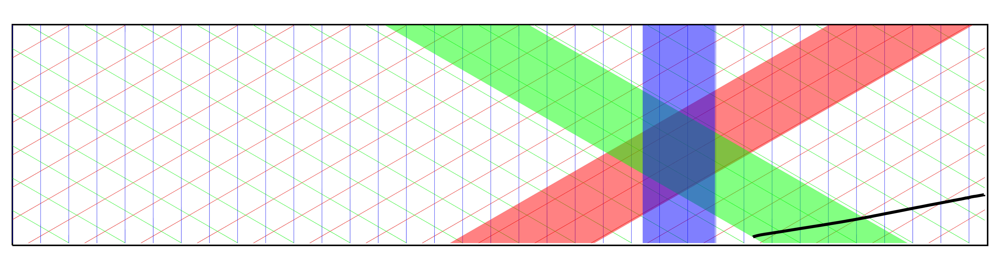

By default,the viewer loads a 10-event beam MC file.
You can load any MicroBoone Larsoft-generated data file by typing the full path name into the 'Filename' box. The viewer has access to any file on /uboone/data or /uboone/app.
Even easier, click on the 'File Browser' link, and you can manually navigate to the directory of your choice, and just click the file name to load the first event in that file.
Note that the system only works on LarSoft files containing 'Event' trees.
To show your cool neato event with someone else, right-click on the "Link to This Event" link at the top of the page, and select 'Copy Link Address'. Then cut and paste into an email to share with others, or copy it to your logbook so you can study it later.
If your event isn't working, click the 'Email This Event' link, and it will open an email you can send to me for your bug report.
To search for a specific event, you can use the "Cut" field just like you would a cut in a ROOT TTree draw command. For example:
fPE>10
Entry: 0
will find the first event in the file that has one or more optical hits greater than 10 PE.
Another example:
Cut: fMCNeutrino.fLepton.fGvtx.fE>1.2
Entry: 22
will look for an event with lepton energy greater than 1.2 GeV, starting with the 22nd entry in the file.
Don't like how the display is laid out? Change it!
Clicking the '+' sign in the top-right corner of any pane will shrink that pane.
Dragging the title bar of any pane will let you move it to a different part of the screen.
To save your changes for the next time you use Argo, click the "Save" button in the Configuration pane. To go back to the old way, click on 'Restore Defaults'
To pan the histogram content left and right, click and drag in the histogram body.
To change the scale of the histogram, click on the horizontal axis and drag left and right.
Note that hovering your mouse over the view brings up a 'magnifying glass' (adjustable from the Configuration pane) which lets you see fine detail. In addition, the hovering your mouse will bring up a 1D wire profile in the 'Wire Info' pane. so you can see the waveform of that particular wire.
Drag in the body of the image to pan in wire number or TDC. Drag the axes to change the scale.
The Time Histogram pane stays zoomed on the same region as the wire views.
Note that the three wire views will all zoom together, so that the number of wires on the horizontal axes stay the same, and the TDC count all stays the same. If you click the checkbox marked Lock TDC?/Wire Aspect Ratio then the TDC and Wire axes will stay locked so that views are proportional. This is useful for estimating angles, which will otherwise be distorted.
The 'Zoom Control' pane shows a picture of which wires you are looking at, as looking at the back of the ZY wire plane. The red stripe indicates the wires you that are visible in plane 0 (view 0), the green is plane 1, and the blue is plane 2. If all three views are centered on the event, it is located inside the overlapping octagonal region.
You can adjust the zoom by dragging this octagonal region, or by clicking and dragging any of the strip edges. Note that the viewer will do it's best to keep your view centered when you do this.
By default, the viewer will try to 'auto zoom' when a new event is loaded. (March 2013: this feature still is slightly buggy; it's hard to figure out all three views simultaneously.)
| Key | Effect |
|---|---|
| n | Next Event |
| p | Previous Event |
| w | Toggle Wire Digitizations |
| h | Toggle Wire Hits |
| c | Toggle Clusters |
| s | Toggle Spacepoints |
| t | Toggle Tracks |
| shift-P | Open new tab with current portlet view, suitable for printing.
(Useful if you want to print a pane with the Magnifying Glass effect) |
| shift-L | Print entire page. (Again, shows mouse-over effects.) |
The basics of the Monte Carlo interaction are shown in the MC Info pane. If multiple interactions are present, they will be listed in an "accordion": click on the interaction number to see the details.
The 'MC Digraph' window shows the cause-and-effect tree for the interaction. On the left is the neutrino interaction, and on the right are the immediate daughter particles (the 'final state' particles) that were propagated into Geant. Clicking on a particle opens up another layer of the tree, showing other tracked particles (G4Trajectories) that were created. Hovering the mouse over any particle will reveal that particle trajectory in red.
Note that to reduce visual clutter, neutrons and photons are not drawn in blue; they are only shown if you hover the mouse over that particle label in the DiGraph.
There are several ways to print your event:
This webpage works in a fundamentally similar way as it's predecessors Arachne and Ariadne, for MINERvA and MINOS respectively. Arachne has been detailed extensively in a NIM paper.
Very briefly, the web page is in fact a JavaScript application, similar to Google Docs. Nearly all of the heavy lifting in displaying the event is done inside your browser. This keeps the load on your fancy laptop, and not on the burdened old servers at Fermilab. The Argo web application in your browser requests data from the server using an AJAX XHttpRequest request call to a server-side Perl script.
The Perl script finds the requested file, and then makes a UNIX socket request to a standalone, always-running process called argo-backend. This is a ROOT-based program that opens the requested file, finds an appropriate entry in the Events tree, and then copies the data into a JSON document for delivery back to the user's browser.
Important differences from the earlier Arachne browser include the fact that the system uses JSON (JavaScript Object Notation) rather than XML. Tests show that JSON parses faster than XML by a factor of almost one hundred in Chrome, and makes coding far simpler.
Another important optimization is the raw/calibrated Wire data in Microboone. A typical event has 3200 TDC ticks collected over a total of 8000 wires. Even if data were truncated to one byte per sample, this is over twenty megabytes of unpacked data. Sent in JSON format, the resulting document is nearly 100 MB, and is too large to be rendered in meaningful time. So, Argo uses some mischievous tricks. It encodes the wire data in a pre-rendered PNG image, using a 256-color lookup palette to improve transmission time. In fact, it encodes the raw and calibrated data three times each. One image is the one you see in the wire views. One image is the grainy version that you see when panning or scrolling (used to save time when rendering the screen), and one image contains the full wire data used by the waveform Wire Info pane.
One by-product is that it is not possible to change the color scheme for the wire digitizations on the fly, and the back-end is heavily taxed by the translation to PNG. However, the back-end can encode everything in under 6 seconds, which is sufficiently fast for the system to be responsive.
Tests have shown that the viewer performs best under Google Chrome. Firefox and Safari come in close behind. Other WebKit-based browsers should also work well. Opera and Konqueror are known to work. The site should run acceptably well on iOS (iPhone, iPod) and Android devices.
Microsoft IE 8 and above should work, providing the user is not using 'Quirks' or 'Compatibility' mode, but MSIE is not officially supported, due to longstanding interoperability problems.
Older versions of browsers can be MUCH slower - in particular, the browsers bundled with Scientific Linux 5 and 6 are very outdated and will be slow.
The viewer will take advantage of "Retina" screens on Retina MacBooks and iOS devices, by doubling the effective resolution of all the views.
The MINERvA viewer was called "Arachne", named after a weaver who won a famous contest with the goddess Minerva to see who could weave the fastest, and was turned into a spider for her hubris.
Keeping in this classical vein, I tried to find a good name related to Argon, but by far the simplest linguistic jump was to the stories of the Argonauts. The Argo was the name of the boat they sailed. What tipped me, of course, was the use of JSON (Jason) in the viewer; the pun was too good to pass up.